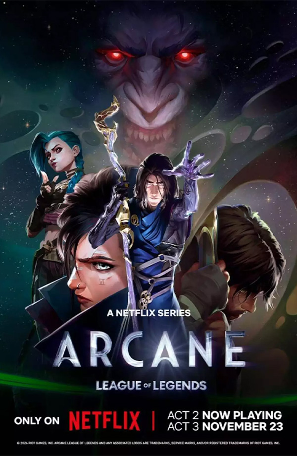
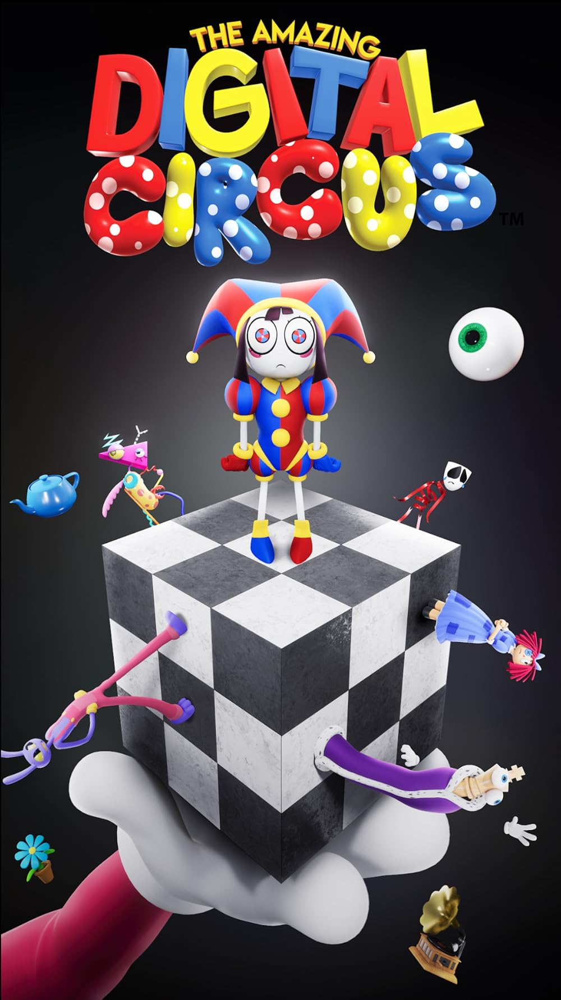
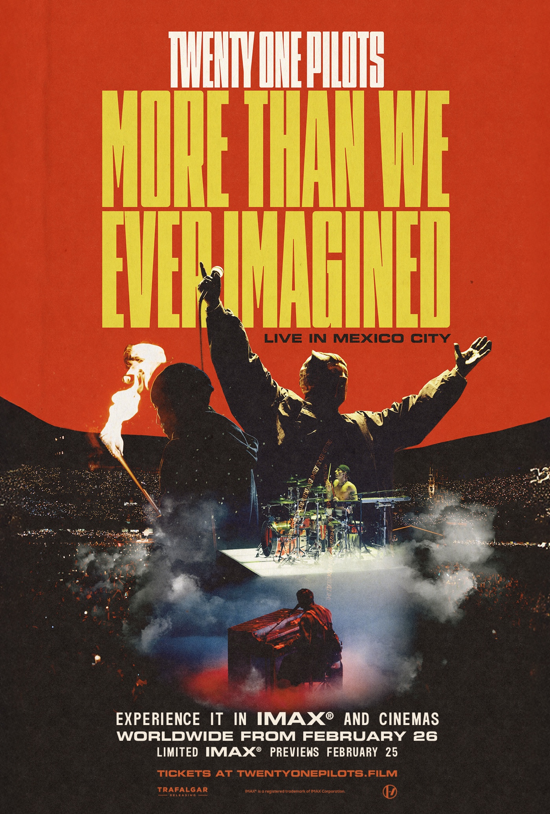

Arcane
The Game Award a la Mejor Adaptación

The Game Award a la Mejor Adaptación

Fue galardonada como la Mejor Serie Web del Año en los Premios Moonie 2024

Twenty One Pilots, dúo formado por Tyler Joseph y Josh Dun, ha acumulado más de 120 nominaciones y decenas de premios desde 2011

La película recibió 5 nominaciones al Oscar 2015, incluyendo Mejor Banda Sonora (Hans Zimmer), Diseño de Producción, Mezcla de Sonido y Edición de Sonido

Dos Premios Emmy (2014, 2015) por logros individuales en animación y dos Premios Annie (2014, 2015) a la mejor producción animada infantil/TV